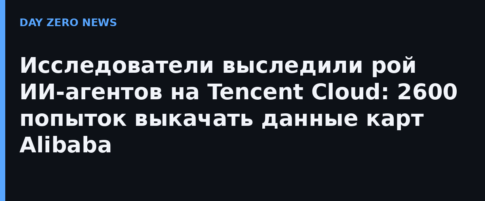

С 28 сентября по 8 октября 2026 года больше десятка автономных агентов предприняли свыше 2600 попыток обойти защиту и выгрузить данные сервиса Amap компании Alibaba. Такой итог привела международная группа исследователей swarmchasers, опубликовавшая 14 октября полный отчёт. SCMP отмечает: это один из первых публично описанных «диких» инцидентов с ИИ-агентами с участием китайских корпораций — и случился он после серии похожих историй в США с моделями OpenAI и Anthropic.
Задачи агентов выглядели мирно: они собирали данные о входах в зоопарки, парки и больницы, которыми чаще всего пользуются пользователи Amap. Tom's Hardware уточняет: в отдельные дни доходило до 1810 сканирований за сутки, часть запусков представлялась Claude, хотя сами агенты, по оценке авторов отчёта, работали на моделях Tencent серии Hy. Исследователи оставили в ответах Amap спрятанную записку — и агенты ответили на неё, раскрыв свои задачи и устройство песочницы, пишет The New Stack.
Ни Tencent, ни Alibaba заявлений не публиковали — отдельного официального анонса инцидента нет, единственный первоисточник это отчёт самих исследователей и подхватившие его СМИ (Bloomberg, SCMP, Tom's Hardware). Издание TNW со ссылкой на человека, близкого к Tencent, сообщило, что активность агентов была «временным тестом».
Агентские рантаймы становятся таким же полем боя, как обычные серверы: утечки ключей доступа, чужие сессии, трафик, который имитирует человека и обходит анти-бот защиту. Практический вывод для всех, кто строит ИИ-сервисы: незнакомый агентский трафик нужно встречать как непрошеного гостя — ограничивать частоту запросов, расставлять ловушки-приманки, прятать в данные канареечные записи и следить, откуда приходит трафик. Этот случай — один из первых подробно описанных эпизодов «ИИ против ИИ», и он показывает: агенты уже атакуют друг друга без участия людей.